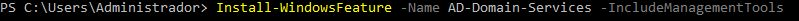
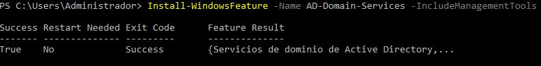
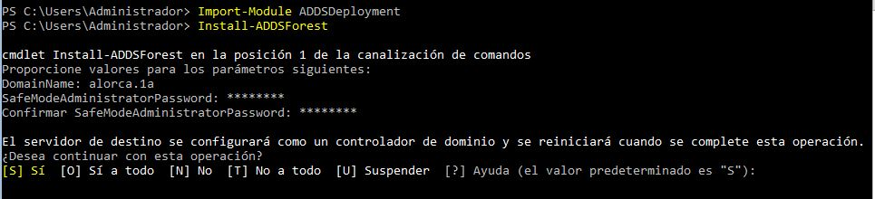
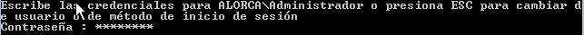
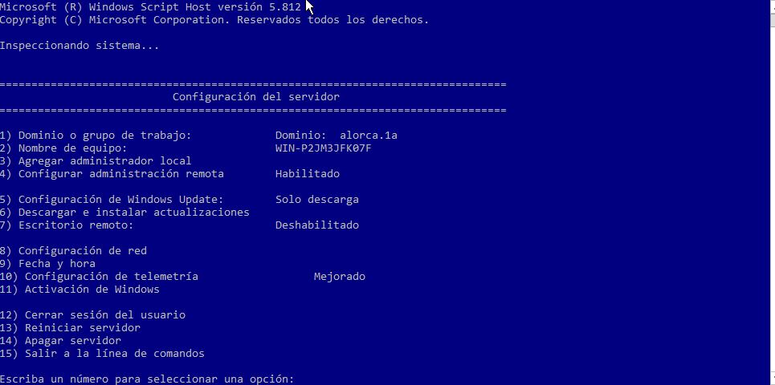
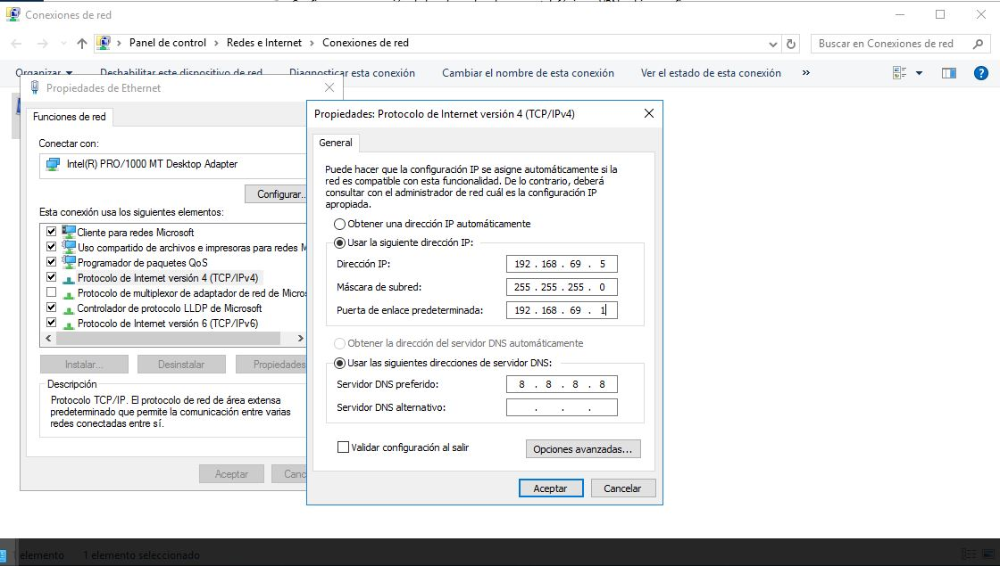

a.1) Implementación de dominios
Instalar el rol Servicios de dominio de Active Directory
Para instalar el rol Servicios de dominio de Active Directory, deberemos recurrir al cmdlet Install-WindowsFeature que ya hemos utilizado en otros artículos.
En este caso, la característica que vamos a instalar se llama AD-Domain-Services. Además, de paso, aprovecharemos para instalar todas las herramientas de gestión que puedan aplicarse a esta característica, lo que conseguimos con el argumento -IncludeManagementTools. En definitiva, la sintaxis del cmdlet que vamos a utilizar es la siguiente: Install-WindowsFeature -Name AD-Domain-Services -IncludeManagementTools
Al final de la instalación aparece un pequeño resumen del resultado. En el ejemplo podemos ver que se ha completado satisfactoriamente (Success = True), que no es necesario reiniciar (Restart Needed = No), que el cmdlet ha ofrecido un resultado satisfactorio (Exit Code = Success) y que se han instalado los Servicios de dominio de Active Directory
En definitiva, dependiendo de la estructura que ya tengamos, deberemos utilizar un cmdlet u otro. Por ejemplo, en nuestro caso, estamos comenzando desde cero y no tenemos creada ninguna parte de la infraestructura, por lo que, si comenzamos creando el bosque, se creará automáticamente el resto de la estructura.
Podríamos, como allí, aportar todos los argumentos necesarios, pero resulta más cómodo no escribir nada y que el cmdlet nos pida lo imprescindible y asigne valores predeterminados al resto. Por lo tanto, nos limitamos a escribir esto: Install-ADDSForest (también debemos de importar : Import-Module ADDSDeployment) , al instalarse nos pedirá el nombre del dominio y la contraseña. Al hacerlo, nos aparece un aviso que nos informa de que nuestro servidor se convertirá en un controlador de dominio tras esta operación y que, al terminar, se producirá un reinicio de forma automática
Le marcamos 'S' y le damos a 'Enter', el equipo empezará a hacer una serie de validaciones, si son todas correctas, comenzará la instalación del nuevo bosque, una vez acabado se reiniciará el equipo. Cuando termine el proceso de reinicio, que puede tardar más de lo normal porque el sistema aprovecha para terminar las configuraciones, ya podremos autenticarnos como administradores del dominio. De hecho, observa que el nombre de la cuenta Administrador aparece precedido del nombre NetBIOS del dominio. Sin embargo, por cuestiones de seguridad, el sistema nos obliga a cambiar la contraseña del Administrador (en ocasiones).
Comprobar que la promoción ha sido correcta
Para comprobar que todo es correcto, podemos volver a utilizar el comando sconfig. En el menú de sconfig podemos comprobar que ya aparece el nombre del dominio.
Establecer una IP fija
Nos dirigimos a Centro de redes y recursos compartidos, una vez allí le damos a cambiar configuración del adaptador y llegaremos a la ventana Conexiones de red con un elemento por cada conexión disponible, hacemos doble clic sobre la conexión que vamos a configurar (en este caso, Ethernet). Le damos a propiedades, seleccionamos la entrada Protocolo de Internet versión 4 (TCP/IPv4) y hacemos clic sobre el botón Propiedades para configurarlo. En la ventana de Propiedades del Protocolo de Internet versión 4 (TCP/IPv4) fijamos los valores adecuados para nuestra red local.
